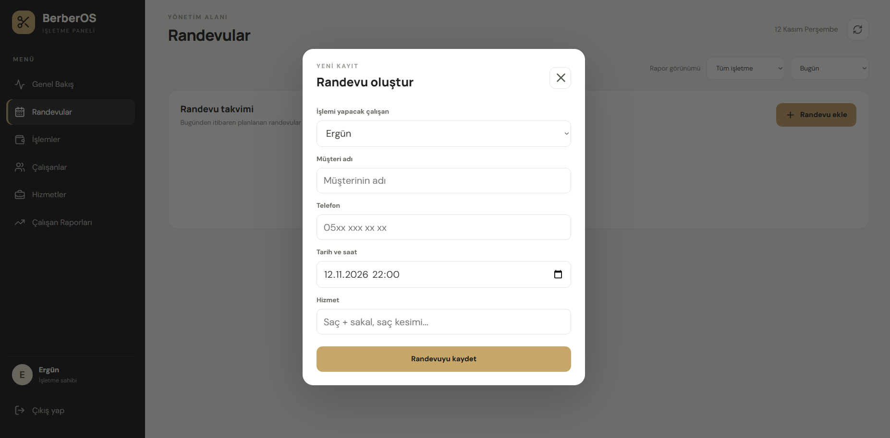
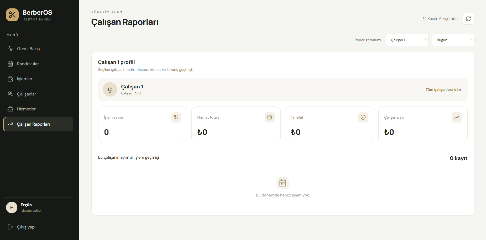
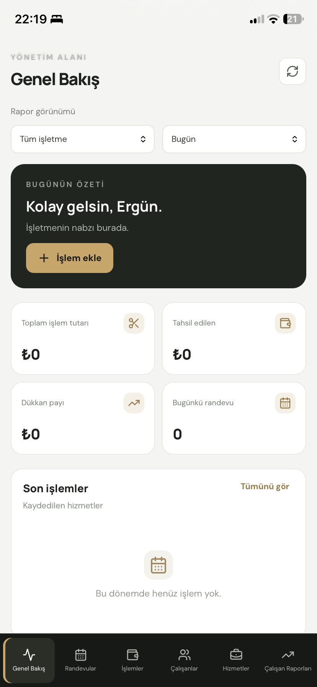
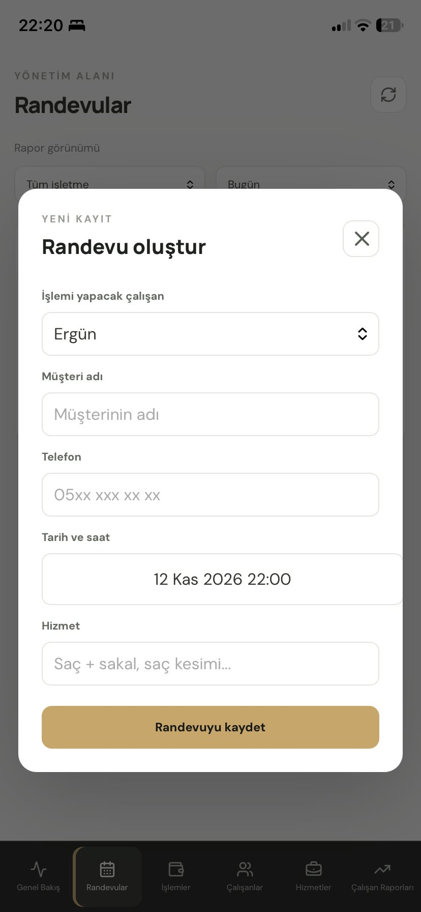
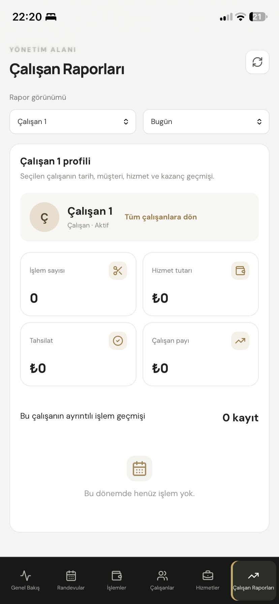

Kolay randevu oluşturma
Çalışanı, müşteri bilgilerini, tarih ve saati seçerek randevuları tek ekrandan yönetin.
Randevular, çalışanlar, işlemler ve kazanç raporları tek bir yerde. İşletmenizin günlük yönetimini kolaylaştıran modern, mobil uyumlu sistem.
Günlük operasyonları düzenli takip edin. BerberOS, işletme sahibi ve çalışanların ihtiyaç duyduğu temel araçları bir araya getirir.
Randevuları oluşturun, takip edin ve gerektiğinde düzenleyin veya silin.
Çalışan hesaplarını ve işletme içindeki görev dağılımını yönetin.
Sunulan hizmetleri, fiyatları ve yapılan işlemleri kayıt altında tutun.
Çalışan bazında işlem, saat ve kazanç bilgilerini görüntüleyin.
Telefon, tablet veya bilgisayardan erişilebilen duyarlı arayüz.
İşletme sahibi ve çalışanlar için ayrı hesaplarla kullanım.
Aşağıdaki görseller doğrudan BerberOS yönetim panelinden alınmıştır. Randevu işlemlerini ve çalışan raporlarını nasıl takip edebileceğinizi inceleyin.

Çalışanı, müşteri bilgilerini, tarih ve saati seçerek randevuları tek ekrandan yönetin.

İşlem sayısı, hizmet tutarı, tahsilat, çalışan payı ve işlem geçmişini takip edin.
Canlı sistem üzerinden arayüzü ve kullanım akışını keşfedin.
Tek seferlik lisans veya aylık abonelik seçeneğinden birini belirleyin.
İşletmenize özel kurulum ve hesap açılışı için ekibimizle görüşün.
Telefonunuzdan da randevuları, işletme özetini ve çalışan raporlarını görüntüleyin. Aşağıdaki ekranlar gerçek BerberOS mobil arayüzünden alınmıştır.

İşletmenizin günlük durumunu tek ekrandan takip edin.

Randevuları telefonunuzdan görüntüleyin ve yönetin.

Çalışanların işlem ve kazanç bilgilerini inceleyin.
Aynı BerberOS sistemini tercih ettiğiniz ödeme modeliyle kullanın.
Bir defa ödeyin. Hosting ve veritabanı giderlerini NevaWebDesign karşılar; bu giderler için ek ücret alınmaz.
Başlangıçta tek seferlik lisans ücreti ödemeden aylık abonelikle kullanın.
Kurulum kapsamı, destek ve güncelleme koşulları satın alma öncesinde yazılı olarak netleştirilir. Fiyatlar işletme ihtiyaçlarına göre talep edilecek ek geliştirmeleri kapsamaz.
BerberOS'u canlı inceleyin veya işletmeniz için kurulum hakkında bize ulaşın.